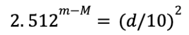

Apparent Magnitude
The apparent magnitude, after the parallax angle, is the second parameter that needs to actually be measured for stars. It is a measure of the brightness of the star, or the magnitude of the star, as perceived from Earth. Telescope instruments can measure this, often in the form of flux (watts/㎡). This then can be converted to the magnitude scale, and denoted as apparent magnitude.
The magnitude scale is a scale of star brightness that was first developed by the ancient Greeks, where 1 was defined as a category for the brightest stars, and 6 as the category for the dimmest ones. So, the way that the magnitude scale works is that the higher the number, the dimmer the star. The Greeks used Sirius, the brightest star in the night sky as the default value, with magnitude 1. Since then, the scale has been expanded to include even brighter objects as negative values (Sirius at -1.46), and dim objects way past 6 (Hubble deep space images down to +30 magnitude). A jump of one magnitude value corresponds to a change in brightness (or flux) by a factor of about 2.512, or the 5th root of 100. A magnitude 2 star therefore is approximately 16x brighter than a magnitude 5 star:
So understanding this, after a telescope instrument measured the flux of 51 Pegasi, that flux was compared to the flux of a star whose brightness was already known, such as Vega yielding the relative brightness to that star, and then from there the relative magnitude to that star could also be calculated in the above way but reversed (for the case of Vega, the magnitude is 0 so the calculation is fairly simple). In this way, the apparent magnitude of 51 Pegasi was found to be 5.49 through a visible filter. This means that it is about 150x dimmer than the star Vega, and 600x dimmer than Sirius, the brightest star. In perfect conditions, it is just barely visible, since the limit for a perfect human eye in perfect conditions tends to be 6th magnitude.
Notice that this parameter is not called magnitude, but apparent magnitude. This is due to the fact that this measured magnitude is not the real magnitude or brightness of the star (also known absolute magnitude), but rather just the magnitude as perceived from the observer, here on Earth. This means that if we have two stars, star A could be 1000x more luminous in absolute magnitude than star B, but star B’s apparent magnitude could still be greater, if it is closer. Therefore, for the sake of further calculations, the absolute magnitude is of more value.
The absolute magnitude is defined as the apparent magnitude of a star as it would seem observed from a distance of 10 parsecs. Therefore, knowing the distance and the apparent magnitude now, we can calculate that, and from there, the relative luminosity.
Absolute Magnitude
We now know two things about 51 Pegasi. That its distance is 15.4 parsecs, and that its apparent magnitude is 5.49. To calculate the absolute magnitude from this, we know that this magnitude would have to be the perceived apparent magnitude from 10 parsecs. We can think of an imaginary version of 51 Pegasi at a distance of 10 parsecs, the apparent brightness of which would be equal to the absolute brightness. For this conversion, we first need to calculate how much farther our real star is from the imaginary star. We can think of this as:
Knowing how much farther 51 Pegasi is from our imaginary star at 10 parsecs, we can calculate how much dimmer it appears than our imaginary version at 10 parsecs, where the apparent and absolute magnitudes would be equal. For this, we need to understand the basic relationship between change in distance and change in brightness. Since brightness needs to scatter in a spherical manner from a star, and the distance can be thought of as the radius of this sphere, the surface area that the light needs to fill is not the distance, but:
Therefore, the change in distance is related to the change in brightness in the following way:
Therefore, due to the nature of this relation, knowing how much father our star is from its imaginary version, we can find how much dimmer it is than it would be by the following relation:
Instead of thinking of this value as how much dimmer 51 Pegasi appears than its imaginary version, we can also think of this as how much brighter the absolute brightness would be compared to the apparent brightness, since absolute brightness (magnitude) is defined as the apparent brightness at 10 parsecs, or where our imaginary star is located.
Now we are left with the task of converting how much brighter the absolute brightness is compared to the apparent brightness, to magnitudes. We know from the definition of magnitudes that the we can calculate the relative brightness of a star compared to another in the following way:
We can think of the magnitude of our imaginary star as equal to the absolute magnitude, since it is located at 10 parsecs, and therefore this relation can be rewritten as:
In other words, we have established that the 5th root of 100 (change in 1 level of magnitude) raised to the change in magnitudes between the absolute and the apparent magnitudes is equal to the relative brightness of our imaginary star at 10 parsecs to that of our actual star. It makes sense to subtract the absolute magnitude from the apparent magnitude, since if the star is farther than 10 parsecs (almost always), then the apparent magnitude will be dimmer than the absolute magnitude. Dimmer however means larger on the magnitude scale, so the relative brightness will still increase.
The only task now that we have to face is rearranging this equation that has been established so that the absolute magnitude would be isolated, allowing us to solve for it knowing now the apparent magnitude and distance:
Now that we have constructed a formula, knowing the distance and apparent magnitudes, the absolute magnitude of 51 Pegasi can be calculated as about 4.5: